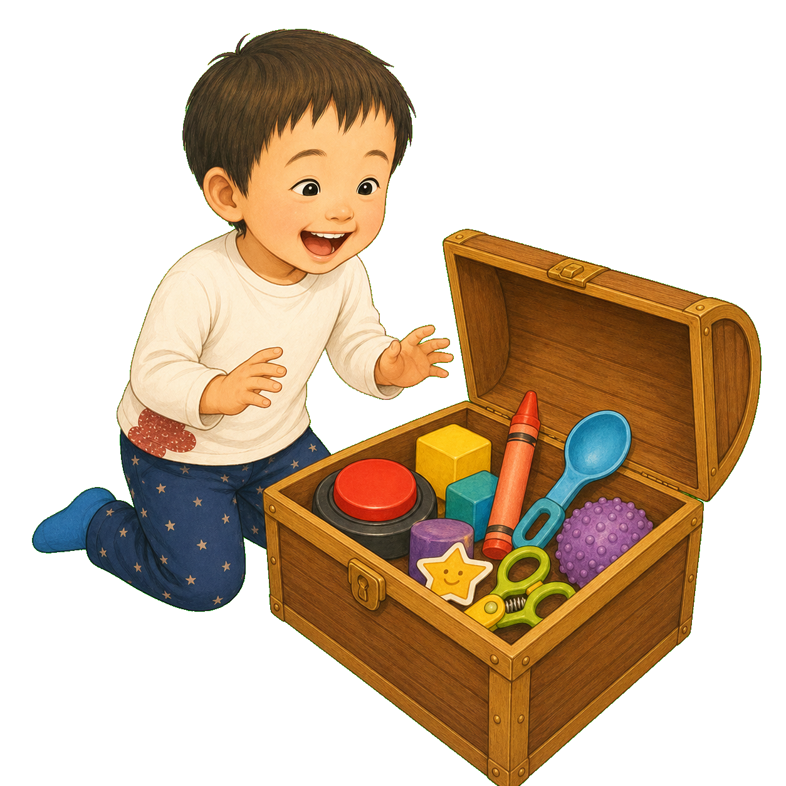
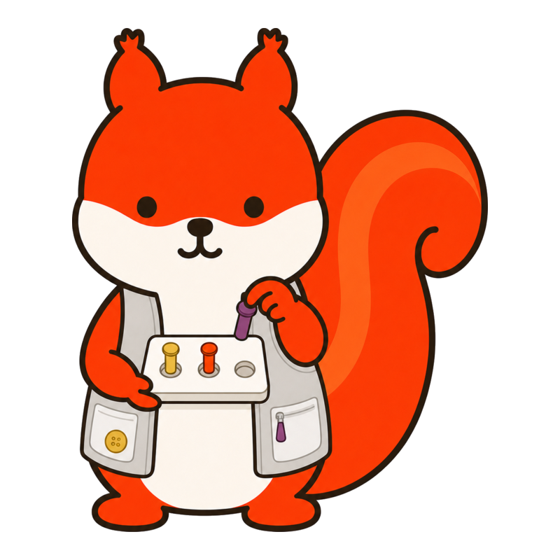
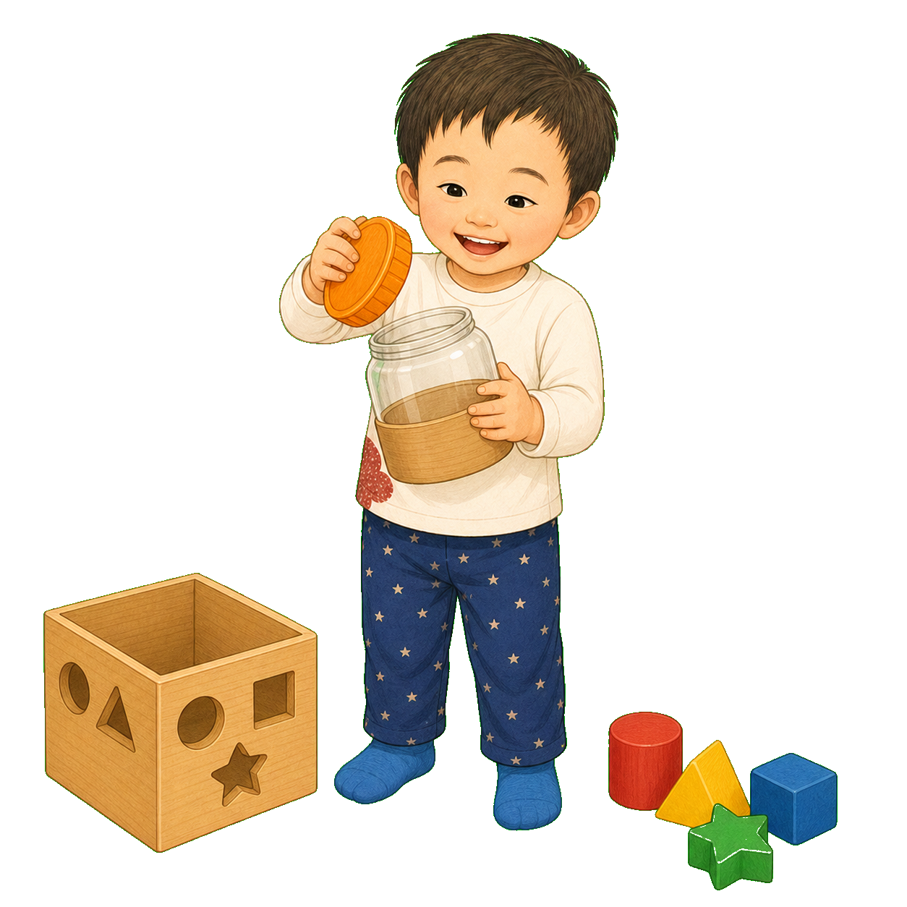
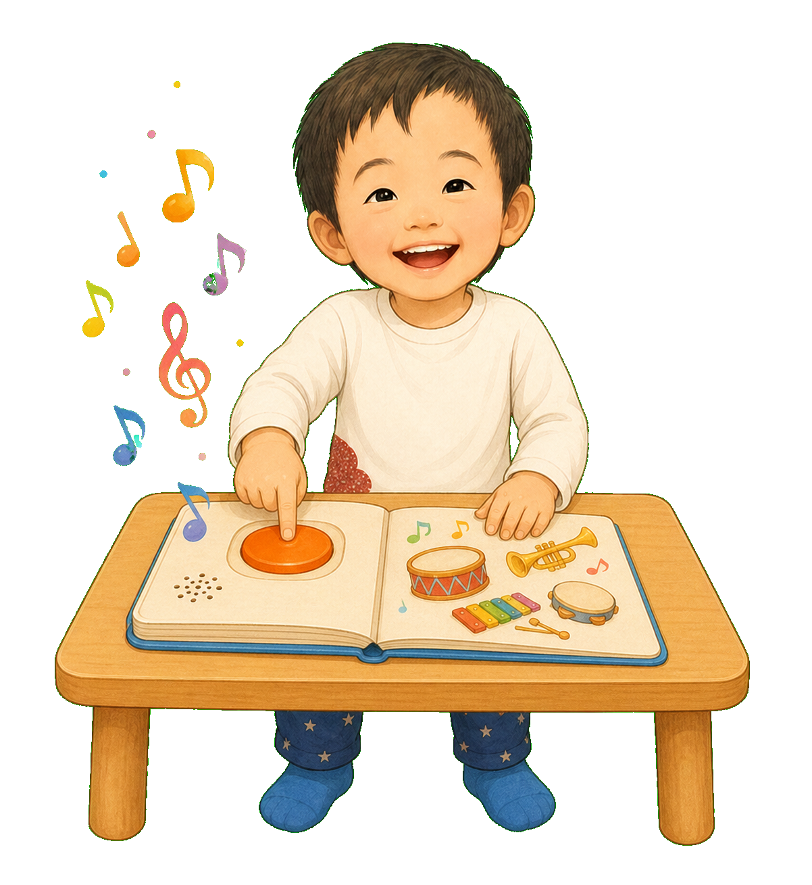

1
ぱかっ。
へんな どうぐが いっぱい！
「これは、おてての
できるを みつける たからばこ」
2
おてての道 ①
見つける。
手を のばす。
手のひらで、ぎゅっ。
ほしいものへ 手が とどき、まずは 手ぜんたいで にぎる。
3
おてての道 ②
右から 左へ。
ぎゅっ、そして ぱっ。
持ちかえる。ねらった ばしょで はなす。
ころん！

4
おてての道 ③
ふたつの おててが、
ちがう しごと。
ひだりてが もつ。みぎてが あける。
「もつ手」と「うごかす手」の チーム。
5
おてての道 ④
おやゆびと ゆびで、
つまむ。ねらう。
手のひら全体から、指先へ。大きいものから、ぼくに合う小さいものへ。
6
おてての道 ⑤
ゆび一本で おす。
手くびで まわす。
力を かえて ひく。
指を分けて使い、動きと結果をつなげる。
7
おてての道 ⑥
おててと 道具が、
なかよくなる。
持つ・動かす・離す力が、食べる、描く、切るへつながる。
道具は、いまの力を つかいやすくする。
8
ぼくは、うたを
もういっかい ききたい。
でも 音楽えほんの ボタンは、ちいさくて かたい。
おしているのに、
おとが でない。

9
りすせんせいは、
たからばこから えらんだ。
えほんを とめる すべりどめ。
ひじを ささえる つくえ。
大きな ボタンカバー。
いまの おててに
ちょうどいい どうぐ。
10
ひだりてで、えほんを おさえる。
みぎてを、ボタンへ。
ひとさしゆびを まんなかへ。
ぐーっ。
うたが はじまった！
11
つぎは 手くびだけ。
そのつぎは、ひじだけ。
ぼくの力が ふえるたび、
おてつだいは すこしずつ 小さくなる。
ひとりだけが、
「じぶんで」じゃない。
「ここには、なにを いれるの？」
「きょう みつけた、
きみの『できた』を いれるんだよ」
できる 形を いっしょにつくると、
おてての力は つながっていく。
おはなしの あとに
順番は目安。得意な道から進んでいい。
この物語は、手を伸ばして手全体で握る、持ち替えて離す、両手を役割分担する、指先でつまむ、指を分けて操作する、道具を使う、という代表的なつながりを示しています。実際の発達は重なり、順番が前後し、活動によって得意さも変わります。玩具は年齢表示だけでなく、本人の興味、現在の操作、安全性に合わせ、必要に応じてOT等と選んでください。
りすせんせいに相談する